# The Commons #### Doug Webb, 2025-07-14 #### _press <strong>p</strong> to see presentation <strong>notes</strong>_ ??? Welcome to this presentation, dear viewer. Let us begin with some questions. --- class: center ## What connects dirty dishes and global heating? ??? Commons connects the responsible use of resources... --- class: center ## If neither capitalism nor authoritarianism, what? ??? ... with the social dynamics of that use - with ideological implications. --- class: center ## A tale of 2 herders & 6 cows <p>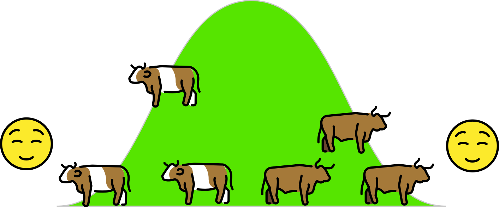</p> ??? Let's start with a story. There were two herders who each grazed 3 cattle on a small, grassy hill. --- class: center ## A tale of 2 herders & 7 cows <p>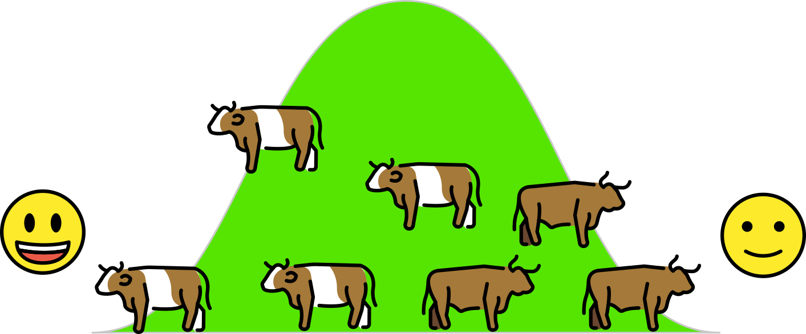</p> ??? One year, the first decided increase their flock to 4. --- class: center ## A tale of 2 herders & 9 cows <p>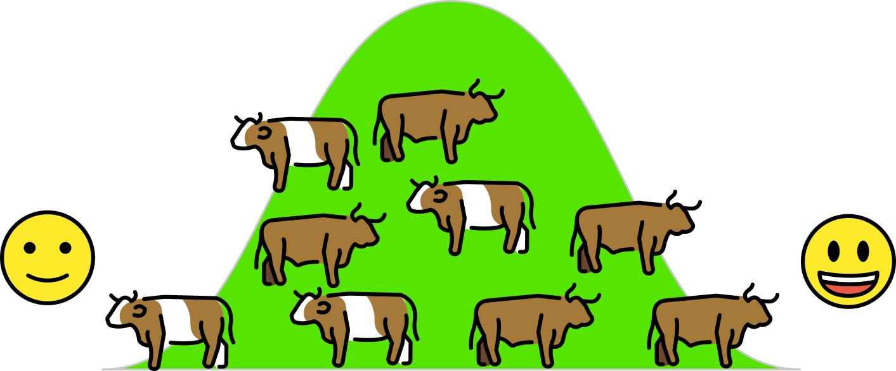</p> ??? The second saw this, and next year matched and raised their flock to 5. --- class: center ## A tale of 2 herders & 11 cows <p>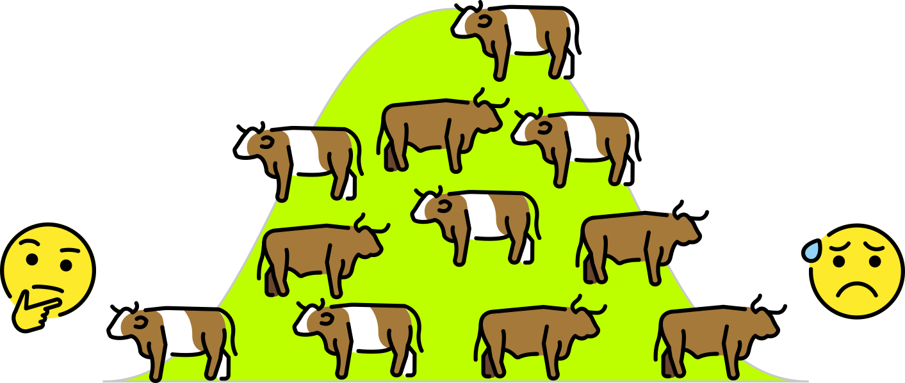</p> ??? The first matched and raised their flock to 6. This year the grass looked a lower than in the past... (It appears the hill had a [carrying capacity](https://en.wikipedia.org/wiki/Carrying_capacity) of ~10 cows) --- class: center ## A tale of 2 herders & 13 cows <p>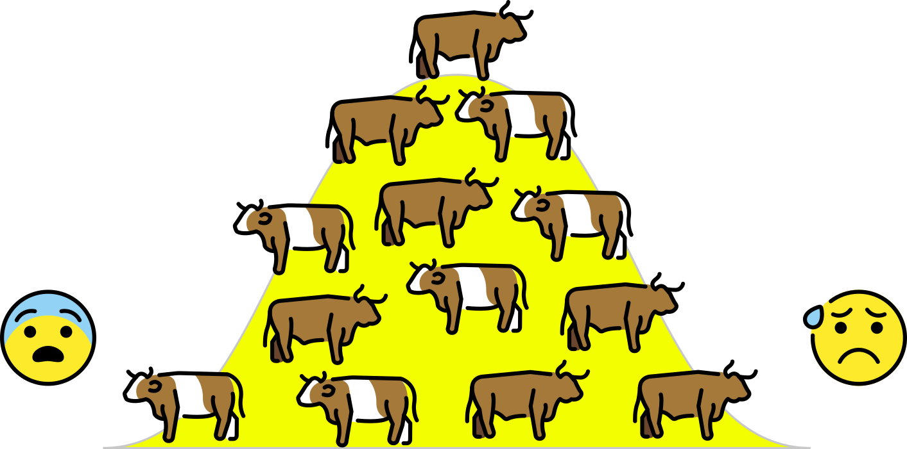</p> ??? ... and the year after that, the second increased to 7. With 13 cows on the hill, the grass looked very sad and the cows noticeably thinner. Didn't they realize they were overgrazing the hill? Did they realize, but neither was willing to be the first to graze less? No one knows, but they both continued increasing to try and make up for their losses. I heard they moved on to the next hill after that... Now, if you think this story is unrealistic, you are on to something, but stay with this the story for now ;p --- class: center ## A tale of 2 herders & 13 cows <p>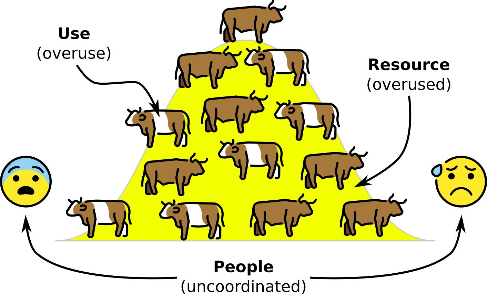</p> ??? The story illustrates the abstract concept of uncoordinated users overusing a resource leading to its degredation and possible destruction - even though that's what none of them want. (See Appendix for game theory about why this can and does happen.) This is often referred to as... --- ## Tragedy of the Commons (~300BC) <div style="display: flex; align-items: center;"> <p>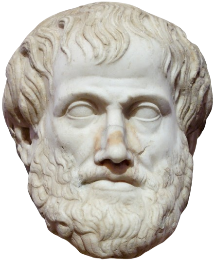</p> <blockquote><strong>"For that which is common to the greatest number has the least care bestowed upon it."</strong><blockquote> <p class="ref">Aristotle, ~300BC. The Politics, Book Two, Part Three 1</p> </div> ??? So it seems Artistotle also lived in a shared house once... Quote continues: "Everybody thinks chiefly of their own, hardly at all of the common interest; and only when they are themself concerned as an individual. For besides other considerations, everybody is more inclined to neglect the duty which they expect another to fulfill" --- ## Tragedy of the Commons (1968) <div style="display: flex; align-items: center;"> <blockquote><strong>"Each person is locked into a system that compels them to increase their herd without limit - in a world that is limited."</strong><blockquote> <p class="ref">Hardin, G., 1968. The Tragedy of the Commons: The population problem has no technical solution; it requires a fundamental extension in morality. Science 162, 1243–1248. <a href="https://doi.org/10.1126/science.162.3859.1243">doi.org/10.1126/science.162.3859.1243</a></p> </div> ??? The wildly popular paper by the rather nasty Hardin presented tragedy as an inevitable outcome: people can't be trusted to share resources responsibly. It was quoted thousands of times and strongly influenced policy in the imperial core and through 'development' into the peripheries - many have been dispossessed. (You may boo.) Quote continues: "Ruin is the destination toward which all people rush, each pursuing their own best interest in a society that believes in the freedom of the commons." --- ## Game theory _Play Nicky Case's <a href="https://ncase.me/trust/">the evolution of trust</a> for a fun dive into Game Theory_ <p>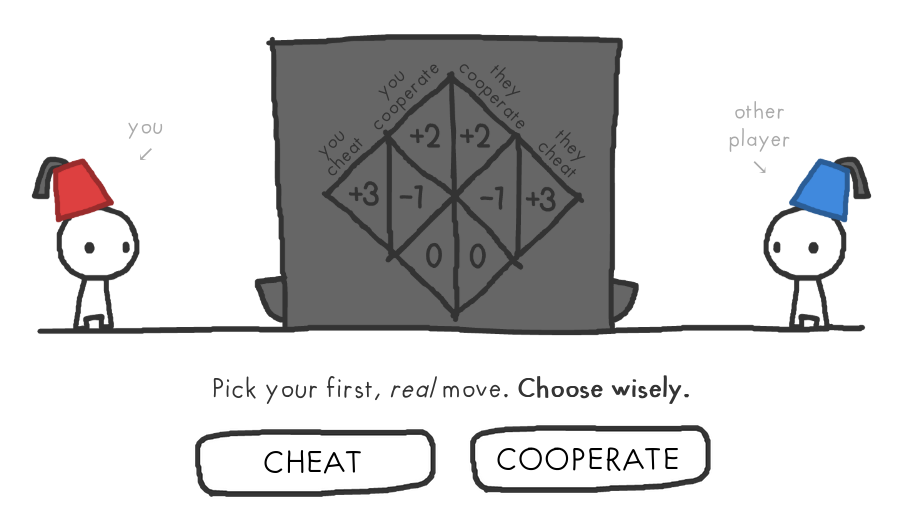</p> ??? Game theory abstracts concrete situations and provides a way to classify. "The Prisonner's dilemma" describes game situations which there is always an incentive to be exploitative rather than cooperative. I won't go into further here, but is an important part of Commons theory. --- class: center ## Solution: external control <p>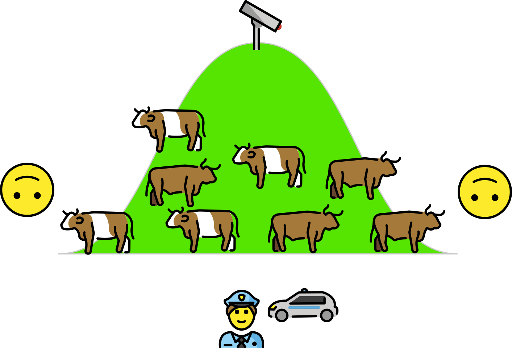</p> ??? With sharing theoretically discarded, there have been two main 'solutions' to the issue. The first relies on external authority to limit the resource use. Issues: 1. the indignity and trauma of dispossession (and resistance) 2. the authority likely understands the resource worse than the users: if it sets the limit too low, the users will likely ignore it; if they set it too high, they will be encouraged to graze more than they should 3. the authority will demand payment for the monitoring and enforcement it now provides --- class: center ## Solution: Privatization <p>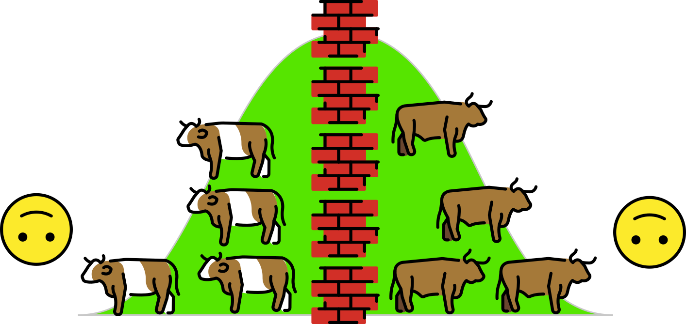</p> ??? The shared resource is privatized, each herder pays the full cost of overgrazing. Issues: 1. property is theft 2. building and maintaining the fence requires work - and cooperation! 3. if a conflict breaks out, who judges? (Answer: the local authority) --- class: center ## Solution: Commons? <p>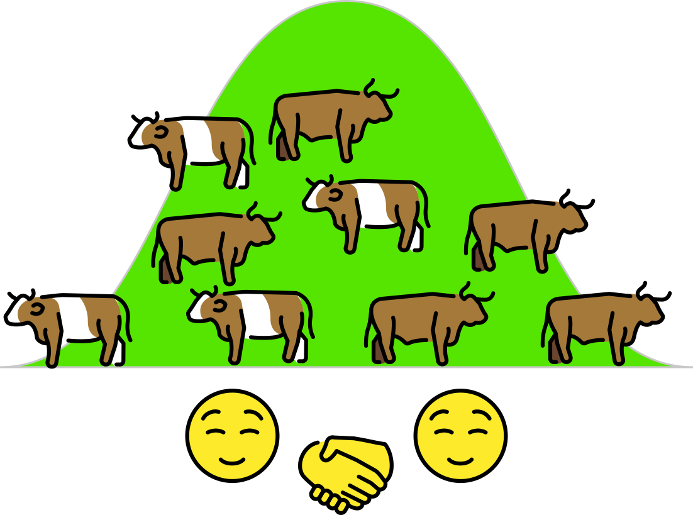</p> ??? "Can't we all just get along?" We all know and experience self-management! What if there was science behind it? What leads to the formation of a successful self-governing community? --- ## Elinor Ostrom <div style="display: flex; align-items: center;"> <ul style="text-align: left;"> <li>Studied groundwater (ab)use in California</li> <li>Was curious about collective action generally</li> <li>Realized literature was scattered across forestry, history, political science...</li> <li>Conducted huge meta-study...</li> <li>"Mother of Commons theory"</li> </ul> </div> ??? You may cheer for Elinor. - Fun fact: gave a seminar at Bielefeld - it exists! - Fun fact: invited Hardin for dinner, made burgers. --- ## Governing the Commons (1990) <div style="display: flex; align-items: center;"> <p>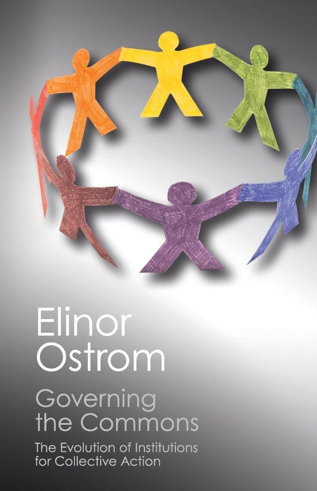</p> <div> <blockquote><em>CPR = common-pool resource ≈ commons</em></blockquote> <blockquote>"I focus entirely on <strong>small-scale</strong> CPRs ... <strong>located within one country</strong> [of] <strong>50 to 15,000 persons</strong> ... These CPRs are primarily <strong>inshore Fisheries, smaller grazing areas, groundwater basins, irrigation systems, and communal forests</strong>"<blockquote> <p class="ref">Ostrom, E., 1990. Governing the commons: the evolution of institutions for collective action, The Political economy of institutions and decisions. Cambridge University Press, Cambridge ; New York.</p> </div> </div> ??? Arguably Ostrom's magnum opus, the work associated with her 'Nobel prize for economics' - she was the first woman to be awarded it. It covers her intellectual history, looks at concrete commons case studies, sets out game theoretical analysis and tabulates the famous 8 principles --- ## The 8 Design principles ## 📏 🎣 🤝 👁️🗨️ 📈 🌊 🔓 🪆 ??? Looking through hundreds of successful, failing and failed commons, the team identified 8 features present in all successful cases. *Original: _"Design principles illustrated by long-enduring CPR institutions"_ --- ## 1. Clearly defined boundaries 📏 > "Individuals or households who have rights to withdraw resource units from the CPR must be clearly defined, as must the boundaries of the CPR itself." > **Everyone knows who is sharing what.** --- ## 2. Appropriate rules* 🎣 > "Appropriation rules restricting time, place, technology, and/or quantity of resource units are related to local labor, material, and/or money" > **There are rules that preserve the commons.** ??? Original*: _"Congruence between appropriation and provision rules and local conditions"_ --- ## 3. Collective-choice arrangements 🤝 > "Most individuals affected by the operational rules can participate in modifying the operational rules." > **The commoners make their rules.** --- ## 4. Monitoring 👁️🗨️ > "Monitors, who actively audit CPR conditions and appropriator behavior, are accountable to the appropriators or are the appropriators." > **The commoners check their rules and resources.** ??? The cost of montitoring was often reduced through the design of rules. For example, the farmers at an irrigation system know the sequence of watering, and the one to receive the water next is present and self-interested that the one currently watering does not extend their watering. --- ## 5. Graduated sanctions 📈 > "Appropriators who violate operational rules are likely to be assessed graduated sanctions (depending on the seriousness and context of the offense) by other appropriators, by officials accountable to these appropriators, or by both." > **The commoners address issues in gradual and appropriate ways.** ??? Exceptions during special circumstances are normal! --- ## Aside: monitoring & sanctions <div style="display: flex; align-items: center;"> <div style="flex-basis: 300px; flex-shrink: 0; text-align: center;"> <p>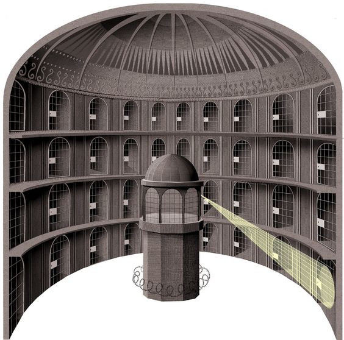</p> <em>Must we be our own jailors?</em> </div> <div> <ul> <li>described as <em>"the crux of the problem"</em></li> <li>given <em>3×</em> as much desciption as the other principles</li> <li>the biggest challenge for anarchists, anti-authoritarians, etc... ?</li> </ul> </div> </div> --- ## Aside: monitoring & sanctions ~~Moralizing & punishment~~ → **system feedback**. Metaphor of riding a bike: - **destination = rules** - **looking = monitoring** - **steering = sanctioning** (course correction) <div style="display: flex; flex-direction: column; align-items: center;"> <p>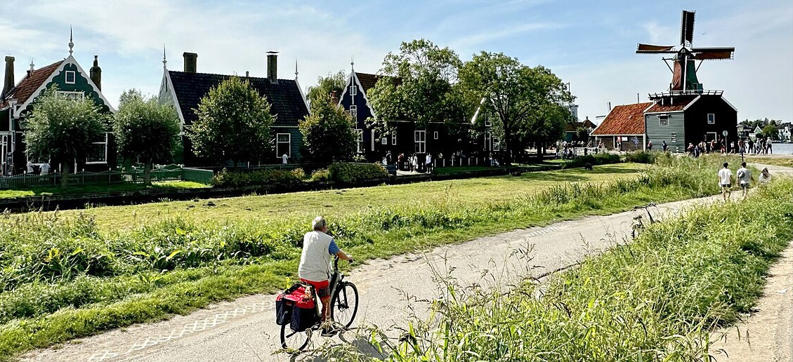</p> <em>Let's ride a bike instead!</em> </div> ??? Think systems not individuals. Think restorative justice, not punitive. Think Tekmîl, not struggle sessions... Monitor, sanction and become a "good protector of the commons"! --- ## 6. Conflict-resolution mechanisms 🌊 > "Appropriators and their officials have rapid access to low-cost local arenas to resolve conflicts among appropriators or between appropriators and officials." > **The commoners have quick access to conflict-resolution.** --- ## 7. Minimal recognition of rights to organize 🔓 > "The rights of appropriators to devise their own institutions are not challenged by external governmental authorities." > **The commoners do what is necessary to please the authorities.** ??? This is why squats and occupations don't endure :( --- _For CPRs that are parts of larger systems_ ## 8. Nested enterprises 🪆 > "Appropriation, provision, monitoring, enforcement, conflict resolution, and governance activities are organized in multiple layers of nested enterprises." > **The previous principles are represented at every level or organizing.** --- ## Note - **intergenerational communities: higher trust** - **significant similarity: lower conflict potential** - **entrenched discrimination** ??? "the populations in these locations have remained stable over long periods of time. Individuals have shared a past and expect to share a future. It is important for individuals to maintain their reputations as reliable members of the community." "None of these situations involves participants who vary greatly in regard to ownership of assets, skills, knowledge, ethnicity, race, or other variables that could strongly divide a group of individuals" "In the Swiss mountains, appropriation rights and provision duties are inherited by individual males who own private property in the village and remain citizens of the village." --- ## Commons as politics <div style="display: flex; align-items: center;"> <div style="flex-basis: 300px; flex-shrink: 0; text-align: center;"> <em><a href="https://en.wikipedia.org/wiki/Silke_Helfrich">Silke Helfrich</a>, 1967 – 2021</em> </div> <div> <blockquote>"[in] the radical German commons discourse ... <strong>Commons are seen as an enabling form and potential foundation for a decentralized and needs-oriented post-capitalist society"</strong><blockquote> <p class="ref">Euler, J., 2016. Commons-creating Society: On the Radical German Commons Discourse. Review of Radical Political Economics 48, 93–110. <a href="https://doi.org/10.1177/0486613415586988">doi.org/10.1177/0486613415586988</a></p> </div> </div> ??? Full quote: "the radical German commons discourse. It rejects naturalist conceptualizations of commons and rather emphasizes the social dimensions. Combining free software and traditional commons, it builds on and goes beyond the Ostrom’s research. Commons are seen as an enabling form and potential foundation for a decentralized and needs-oriented post-capitalist society free of personal and structural domination and beyond the market and state." --- ## Digital Commons <a href="https://commons.wikimedia.org/wiki/Main_Page"><p>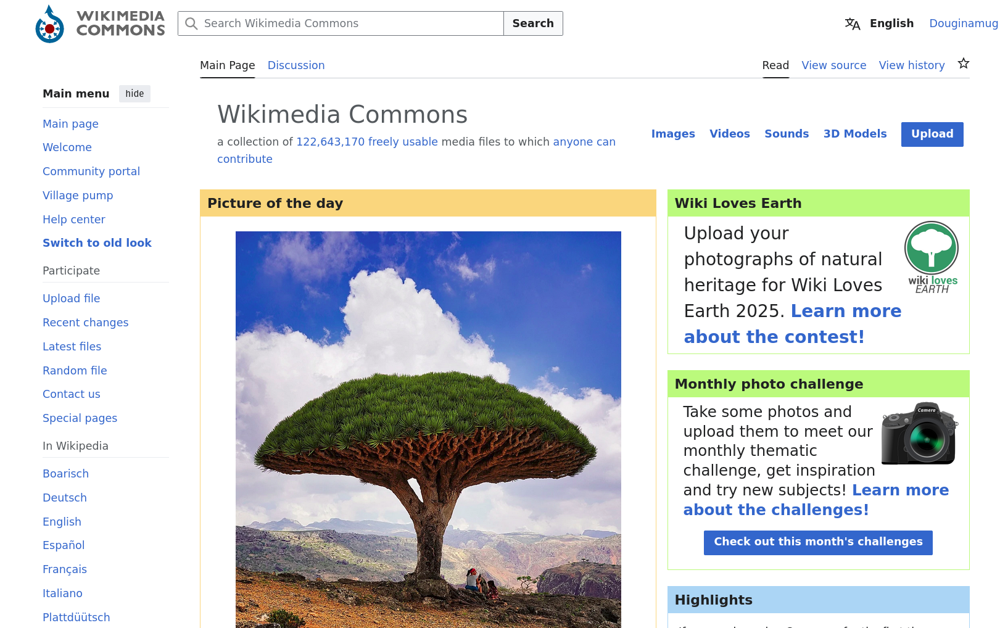</p></a> --- ## Housing Commons <div style="display: flex; align-items: center;"> <div style="flex-basis: 300px; flex-shrink: 0; text-align: center;"> <em>Oh noes...</em> </div> <div> <blockquote><strong>"In the coliving setting, the resource in question is cleanliness, or more generally, order."</strong><blockquote> <p class="ref">Kronovet, D., Frey, S., DeSimone, J., 2025. Cybernetic Governance in a Coliving House. <a href="https://doi.org/10.48550/arXiv.2504.17113">doi.org/10.48550/arXiv.2504.17113</a></p> </div> </div> ??? Quote continues: "Residents “consume order” during the day – whether by using a dish, tracking dirt on the floor, eating food from the fridge, or making noise in common space. Each of these actions constitutes, in ways large or small, a consumption of shared order for personal benefit. Sustaining this CPR requires residents to continually produce order such that homeostasis is maintained." --- ## Regarding Kanthaus <div style="display: flex; align-items: center;"> <div style="flex-basis: 300px; flex-shrink: 0; text-align: center;"> <p>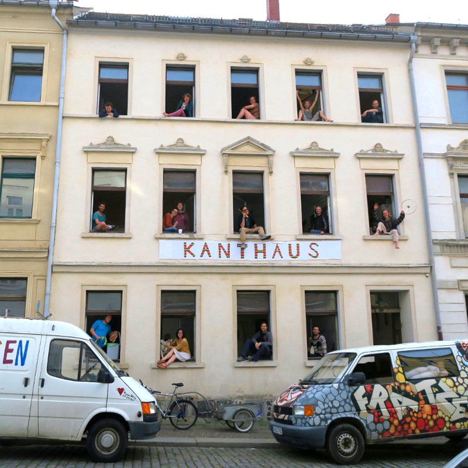</p> <em>Must we be our own jailors?</em> </div> <div> <ul> <li>experienced multiple coliving fails beforehand</li> <li>commons theory gave framework to experience</li> <li>heavy influence in the <a href="https://git.kanthaus.online/kanthaus/kanthaus-governance/src/branch/master/documents/constitution/constitution.en.md">Kanthaus constitution</a> and governance</li> </ul> </div> </div> --- ## Be goose, reclaim commons <div style="display: flex; align-items: center;"> <div> <p><em>Peace was never an option</em></p> </div> <div> <blockquote> "The law locks up the man or woman<br> who steals the goose from off the common<br> But leaves the greater villain loose<br> Who steals the common from off the goose. <br> <br> ... <br> <br> <strong>And geese will still a common lack</strong><br> <strong>Till they go and steal it back"</strong> <p class="ref">Anonymous, first published 1821. <a href="https://en.wikipedia.org/wiki/The_Goose_and_the_Common">The Goose and the Common.</a></p> </blockquote> </div> </div> ??? Know y(our) ancestors. People have been strugglin against domination for a long time. The Enclosure (i.e. Privatization) of common grazing land in England during the 1500s sparked protest and lead to this great poem. For the uncultured: the goose is from "Untitled Goose Game" and the quote from Magneto. https://knowyourmeme.com/memes/peace-was-never-an-option#peace --- ## Omnia sunt communia <div style="display: flex; align-items: center;"> <div> <p>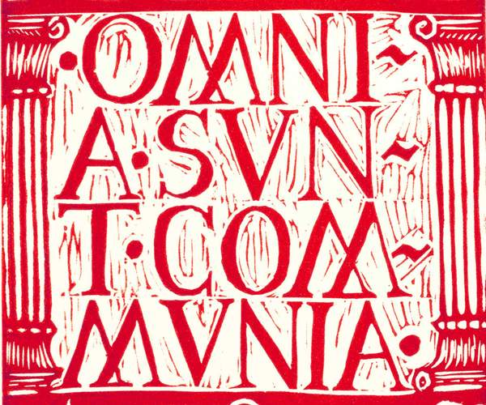</p> <p>Christian communism of the German Peasant's War</p> </div> <blockquote><strong>"And the multitude of them that believed were of one heart and of one soul ... they had all things common"</strong><blockquote> <p class="ref">Acts 4:32-35. Bible, King James Version.</p> </div> ??? A rallying cry during the German Peasant's War (Bauernkrieg) of 1525. 500 year anniversary, sharpen your pitchforks! (and hopefully don't get massacred like last time.) --- class: center ## Science™️ confirms people can sustainably share things without market or state ??? Thank you Science, we would not have known it without you. --- class: center ## self-governance sometimes requires hard social work ??? something something the price of freedom. Oh, and who is doing that work again? --- class: center ## the commons is politics we can live (and expand) --- class: center # 📏 🎣 🤝 👁️🗨️ 📈 🌊 🔓 🪆